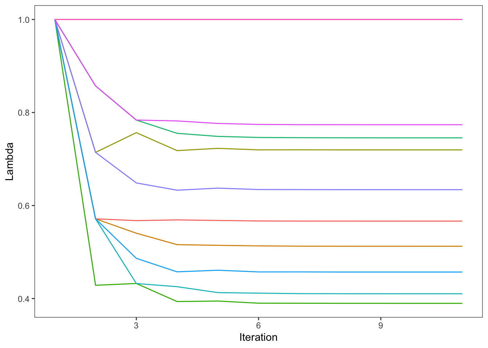
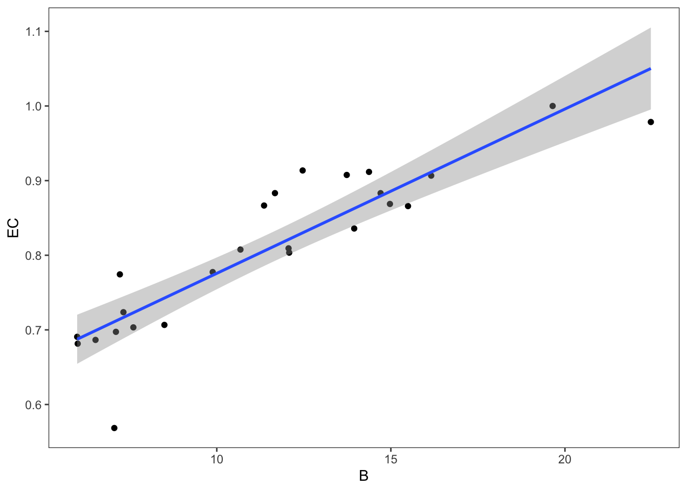

Notes
Centrality Measures
The more connected you are the closer you are to the center of the network (Hence centrality).
Why detect centrality (remove the most influential terrorist maximize effort payoff, or minimize disruption to the network).
Quick overview
Degree centrality. In, out and total degree. Indegree = colsums (i was nominated \(x\) times), outdegree = rowsums (I sent \(x\) links). How many connections you have.
\(\text{degree} = \sum\text{number of times selected}\)
Opportunity to influence or be influenced directly.
Closeness. Fast reachability to any other actor in the network. Higher is less central. igraph gives you the inverse of the closeness.
Marginals of the geodesic distance matrix.
\(\text{closeness} = \sum\text{shortest path length to each other node}\)
Betweeness. Proportion of times an actor is in between two other actors (shortest path).
\(\text{betweeness} = \sum\frac{\text{Number of shortest paths from U to W that go through target}}{\text{Number of shortest paths from U to W}}\)
Eigenvector. Also called power. How central an actor is as a function of the centrality of the connections of that actor. Connections are weighted by their own connections.
Start with \(\lambda = [1,1,1,1,…,1]\). Multiply matrix by Lambda, and get a new Lambda. Repeat until there is no more change.
\[ EC_i = \frac{1}{max\lambda}\times(b_{i,j}\lambda) \]
A = runif(100) |> round() |> matrix(nrow = 10)
lambda = rep(1,10) |> matrix(nrow = 1)
lambdas = matrix(ncol = 10, nrow = 11)
lambdas[1,] = lambda
for (i in 1:10){lambda = lambda %*% A;lambda=1/max(lambda)*lambda;lambdas[i+1,] = lambda}
lambdas |>
as_tibble(rownames = 'iteration') |>
mutate(iteration = as.numeric(iteration)) |>
pivot_longer(V1:V10) |>
ggplot(aes(x = iteration, y = value, color = name, group = name))+
geom_line(show.legend = F)+
labs(x= "Iteration", y= "Lambda")
Key actor analysis
All centrality measures are mostly related to each other. When and how they differ can tell you about the structure of the matrix.
Relies mostly on betweenness and eigenvector centralities.
high b - low EC = critical gatekeeper
low B - High EC = connected to important people but no more
actors = 25
A = runif(actors^2) |> round() |> matrix(nrow = actors)
diag(A) = 0
net = graph_from_adjacency_matrix(A)
tibble(B = betweenness(net),
EC = eigen_centrality(net)$vector) |> ggplot(aes(B,EC))+geom_point() + geom_smooth(method = 'lm')
Social Capital
Actual or potential resource linked to possession of a network of relationships, which can be convertible into economic capital.
Be careful about confounds: network centrality (being popular at school) may be correlated with other factors (e.g., wearing expensive clothes, having money).